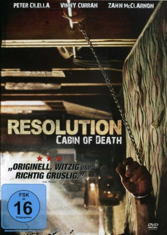

#10195 Resolution - Cabin of Death
Alternativ: Resolution (Englischer Titel)
 
 IMDB-Wertung: 6.3 / 10
IMDB-Wertung: 6.3 / 10  Metascore: 80
Metascore: 80 
Chris ist am Ende: Der drogenabhängige Mann fristet sein trostloses Dasein zwischen alten Möbeln und Crack in einem baufälligen Haus, mitten im Nirgendwo. Lediglich ein paar Erinnerungsstücke leisten ihm Gesellschaft. Eines Tages erhält er überraschenden Besuch von seinem ehemals besten Freund Michael - der erste Besucher seit Ewigkeiten. Doch Michael ist nicht ohne Grund aufgetaucht: Er möchte seinen Freund von der Drogensucht befreien und legt ihm deshalb kurzerhand Handschellen an. Der Entzug kann also beginnen. Doch schon bald entdeckt Michael, dass die Rettungsaktion für seinen Freund das geringste Problem der beiden ist, denn eine merkwürdige Bedrohung scheint das Haus in Beschlag zu nehmen. Michael findet mysteriöse Artefakte in der verlassenen Hütte: Alte Fotografien, Tonaufnahmen und Videos, auf denen von wahrhaft makabren Geschichten erzählt wird…
Jahr: 2012
Dauer: 93 Minuten
FSK: 12
Land: USA Studio: Tribeca FilmTonspuren: DTS - ,
Untertitel:
Auflösung: 1080p (1920x800) Größe: 4505 MB
Genre: Thriller, Horror, Mystery
Regisseur: Justin Benson, Aaron Moorhead
Drehbuch: Justin Benson
Soundtrack:
Darsteller:
- Peter Cilella als Michael Danube
- Vinny Curran als Chris Daniels
- Emily Montague als Jennifer Danube
- Kurt David Anderson als Billy
 Zahn McClarnon als Charles
Zahn McClarnon als Charles- Bill Oberst Jr. als Byron
- Justin Benson als Justin the Level 3 UFO Cult Member
- Aaron Moorhead als Level 2.5 UFO Cult Member
- David Lawson Jr. als Dave the Level 1 UFO Cult Member
- Sarah Oliver als Woman Missing Arm
- Skyler Meacham als Micah
- Josh Higgins als Ted Tellensworth
- Carmel Benson als Sara
- Glen Roberts als Charles' Friend 1
- Bob Low als Charles' Friend 2
- Michael Felker als White Trash Kid With Soldering Iron
- Thor Wixom als Roadside Man with Pick Axe
- Melissa Lyon als Mental Institute Escapee in Window
- Shiblon Wixon als Antique Store Clerk
- Dan Martinez als Store Shopper
- Michael Loschiavo als Man with Burned Face
- Jimmy Brayl als One-Armed Soldier
- Mila Rivera als Woman in Photos 1
- Tabitha Brown als Woman in Photos 2
- Catherine Burns als The Voice of 'The Tragedy of 1920'
Datei: X:\2012(N-Z)\Resolution - Cabin of Death (2012, FSK12, 1920x800).mkv seit 18.12.2018
Festplatte: HD 2012(N-Z)-2013(A-H)
 Es gibt insgesamt 138 Filme in der Gruppe '2012(N-Z)'
Es gibt insgesamt 138 Filme in der Gruppe '2012(N-Z)'